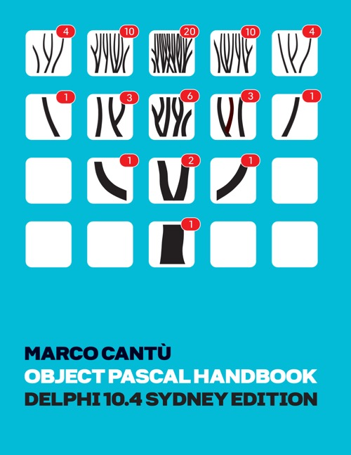

Object Pascal Handbook (Delphi 10.4 Sydney Edition)
Writed by : Marco Cantú
Published date : 11/12/2020
ISBN-13 : 9798554519963
Language :  English
English
Web site : https://www.marcocantu.com/objectpascalhandbook/
About Object Pascal Handbook (Delphi 10.4 Sydney Edition)
This newly updated 500-page e-book is a complete guide to the current, modern Object Pascal programming language by best-selling Delphi books author and Delphi Senior Product Manager, Marco Cantú.
It's a manual for new and existing Object Pascal developers and covers, among other things, the following:
- Variables and data types
- Procedures and functions
- Arrays, records, Strings
- Objects and Inheritance
- Handling exceptions
- Properties and Events
- Interfaces and Classes
- Generics
- Anonymous methods
- RTTI and attributes
- TObject and the runtime library
Where to buy ?
This book has the ISBN13 "9798554519963".
If it is still available for sale, you can order it in your favorite bookstore, by its publisher or online at
Amazon CA,
Amazon FR,
Amazon JP,
Amazon UK or
Amazon USA depending on your country.
Table of content
Part I
Chapter 1: Coding in Pascal
Chapter 2: Variables and Data Types
Chapter 3: Language Statements
Chapter 4: Procedures and Functions
Chapter 5: Arrays and Records
Chapter 6: All About Strings
Part II
Chapter 7: Objects
Chapter 8: Inheritance
Chapter 9: Handling Exceptions
Chapter 10: Properties and Events
Chapter 11: Interfaces
Chapter 12: Manipulating Classes
Chapter 13: Objects and Memory
Part III
Chapter 14: Generics
Chapter 15: Anonymous Methods
Chapter 16: Reflection and Attributes
Chapter 17: The Object Class
Chapter 18: RunTime Library